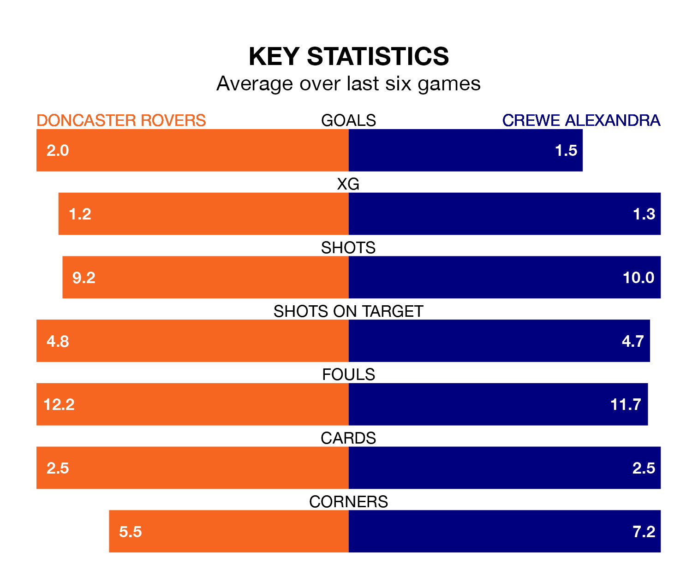

Crewe Alexandra travel to the Eco-Power Stadium for Saturday's match against Doncaster Rovers looking to bounce back from defeat last time out in EFL League Two.
The Railwaymen, who sit fourth in the league after 35 games, fell to a 3-2 home defeat to Morecambe on March 2.
They face a Doncaster side who secured a draw in their last match, a 1-1 tie with Bradford City, and who sit 20th in the table.
With 64 goals in 35 games so far this season, Crewe are scoring more than average in the league with 1.8 goals per game. And they are conceding fewer than average, letting in 49 goals at a rate of 1.4 per game.
Doncaster, meanwhile, are below average scorers, with 1.3 goals per game, compared to a league average of 1.5. They have conceded 1.7 goals per game.
In the last 10 years, Doncaster and Crewe have played each other on 14 occasions. Doncaster won four of them, Crewe seven, and they drew three times.
On average, the Rovers scored 1.3 goals and the Railwaymen 1.6 in those matches.
Their last meeting was on November 25, when Crewe won 3-2 at home.
Rovers are in reasonable form in EFL League Two, with three wins and two draws from their last six games.
And also with three wins and two draws over that period, the Railwaymen's form is identical – they have both taken 11 points from 18.
Saturday's match will be refereed by Craig Hicks, who has taken charge of five EFL League Two games so far this season, issuing one red card and booking 21 players. He has awarded one penalty.
He is yet to oversee a match featuring either Doncaster or Crewe this season.
Updated: 09:34 (UTC), 08/03/24